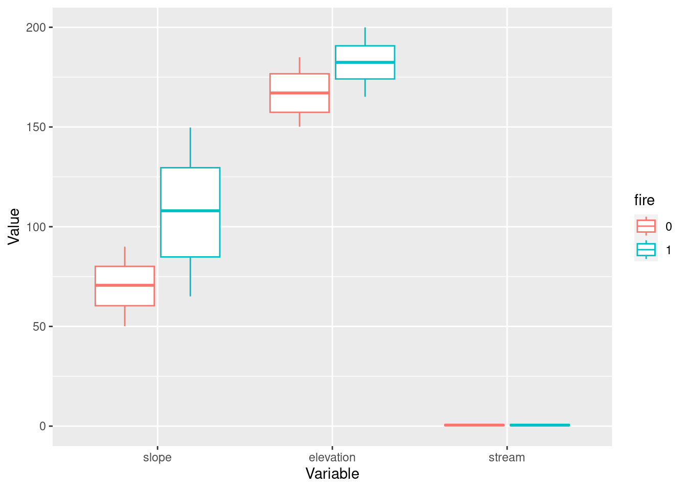

### Function to simulate data and write it as a dataframe
simulate_data <- function(){
### Create variables in a dataframe
### Make column for observation ID
df <- data.frame(id = seq(1,1000),
### Add columns for explanatory variables
### Add column for treatment variable
fire = c(rep(0,500), rep(1,500)),
### And the rest of the covariates
slope = c(runif(500, min = 50, max = 90),
runif(500, min = 65, max = 150)),
elevation = c(runif(500, min = 150, max = 185),
runif(500, min = 165, max = 200)),
stream = runif(1000, min = 0, max = 1),
### And the error term
error = rnorm(1000, mean = 0, sd = 5))
### Add a slope*slope variable
df <- df %>%
mutate(slope2 = slope^2)
### Make column for outcome variable (species richness)
df <- df %>%
mutate(species_richness = 1 + 5*fire + 0.07*slope + 0.05*elevation + 2*stream - 0.005*slope2 + error)
return(df)
}Matching in R
Description
Code to demonstrate matching in R. Adapted from the supplementary materials from Butsic, V. et al. (2017): Quasi-experimental methods enable stronger inferences from observational data in ecology. (c) Matthias Baumann (2017-01-10).
In the Butsic et al. paper, they used the example of the impact of wildfire on species richness. Here, we will simulate data with a known treatment effect of fire on species richness. We will then compare the estimated effect we get through a naive ordinary least squares (OLS) regression approach to the effect we estimate when we use matching methods to control for observable confounding variables.
Set up
Load required packages. In this demo, we will use the package “MatchIt” for the matching process.
Simulate data
Simulated data is handy because we know the true effect of the treatment variable. Here, we’ll write a function to simulate a dataset where we know the true effect of fire on species richness.
We know that the true effect of the treatment variable (fire) is a 5x increase in the response variable (species richness).
Estimate the effect using ordinary least squares
### Write a function to generate data and analyze using OLS
ols_fun <- function(){
### Simulate the dataset
data <- simulate_data()
### Run OLS regression
ols <- lm(species_richness ~ fire + slope + elevation + stream,
data = data)
### Extract model coefficients and standard error
fire_coeff <- coef(summary(ols))["fire", "Estimate"]
fire_se <- coef(summary(ols))["fire", "Std. Error"]
list <- list(fire_coeff, fire_se)
}
### Apply the function to 1000 replicates
ols_sim <- replicate(1000, ols_fun())
### Extract the model estimates
ols_fire_est <- unlist(ols_sim[1, ])
### Print mean, standard deviation, minimum, and maximum values for coefficient estimates
c(mean(ols_fire_est), sd(ols_fire_est),
min(ols_fire_est), max(ols_fire_est))[1] 7.1303593 0.5608342 4.8690296 9.0115260### Extract the standard deviations
ols_fire_sd <- unlist(ols_sim[2, ])
### Print mean, standard deviation, minimum, and maximum standard deviation of coefficient estimates
c(mean(ols_fire_sd), sd(ols_fire_sd),
min(ols_fire_sd), max(ols_fire_sd))[1] 0.6049609 0.0182360 0.5562830 0.6669750The effect estimated by OLS is incorrect– it should be 5.
Use pre-regression matching, then run the regression
### Write a function to generate the data, use matching to subset the data, and run a regression on the matched data
pps_fun <- function(){
### Simulate the dataset
data <- simulate_data()
### Match the data on the observed covariates
match <- matchit(fire ~ slope +
elevation +
stream,
### set method to use for matching
method = "nearest",
### tell it what data source to draw matches from
data = data,
### tell it to use logistic regression for the matching
distance = "glm",
link = "probit",
### specify which order to draw potential points from the full dataset
m.order = "random",
### set a maximum distance for the matches
caliper = 0.10)
### Extract the matched data from the full dataset
matched_data = match.data(match)
### Run OLS on the matched dataset
ols <- lm(species_richness ~ fire + slope +
elevation + stream,
data = matched_data)
### Extract model coefficients
fire_coeff <- coef(summary(ols))["fire", "Estimate"]
fire_se <- coef(summary(ols))["fire", "Std. Error"]
list <- list(fire_coeff, fire_se)
}
### Apply the function to 1000 replicates
pps_sim <- replicate(1000, pps_fun())
### Extract the model estimates
pps_fire_est <- unlist(pps_sim[1,])
### Print mean, standard deviation, minimum, and maximum values for coefficient estimates
c(mean(pps_fire_est), sd(pps_fire_est),
min(pps_fire_est), max(pps_fire_est))[1] 4.8831021 0.6929074 2.8190014 6.9373459### Extract the standard deviations
pps_fire_sd <- unlist(pps_sim[2,])
### Print mean, standard deviation, minimum, and maximum standard deviation of coefficient estimates
c(mean(pps_fire_sd), sd(pps_fire_sd),
min(pps_fire_sd), max(pps_fire_sd))[1] 0.67787593 0.04336097 0.54919312 0.87753424Take a closer look at the matching process
Pre-matching data
### Simulate a dataset
data_for_match <- simulate_data()
### Make fire a factor variable
data_for_match <- data_for_match %>%
mutate_at(vars(fire),
funs(factor))Warning: `funs()` was deprecated in dplyr 0.8.0.
ℹ Please use a list of either functions or lambdas:
# Simple named list: list(mean = mean, median = median)
# Auto named with `tibble::lst()`: tibble::lst(mean, median)
# Using lambdas list(~ mean(., trim = .2), ~ median(., na.rm = TRUE))### Take a look at the balance of the covariates before matching
data_for_match %>%
dplyr::select(id, fire, slope, elevation, stream) %>%
gather(variable, value, slope:stream, factor_key = TRUE) %>%
ggplot(aes(x = variable, y = value, color = fire)) +
geom_boxplot() +
xlab("Variable") + ylab("Value")
### fires: 0 = unburned, 1 = burned
### You can also look at it in table form
covariate_summ <- data_for_match %>%
group_by(fire) %>%
summarise(slope_mean = mean(slope),
slope_sd = sd(slope),
elevation_mean = mean(elevation),
elevation_sd = sd(elevation),
stream_mean = mean(stream),
stream_sd = sd(stream))We can see that there are issues with the balance between the burned and unburned sample units. The burned areas are on steeper slopes and higher elevations, on average.
Match the data
### Match the data on the observed covariates
match <- matchit(fire ~ slope +
elevation +
stream,
### set method to use for matching
method = "nearest",
### tell it what data source to draw matches from
data = data_for_match,
### tell it to use logistic regression for the matching
distance = "glm",
link = "probit",
### specify which order to draw potential points from the full dataset
m.order = "random",
### set a maximum distance for the matches
caliper = 0.10)
### Take a look at the quality of the matches
match_quality <- summary(match,
standardize = TRUE)
### Let's see how many points were matched
match_quality_nn <- as.data.frame(match_quality$nn)
### Let's look at the pre-match covariate balance
match_quality_unmatched <- as.data.frame(match_quality$sum.all)
### What does the covariate balance look like after matching?
match_quality_summary <- as.data.frame(match_quality$sum.matched)
### Ideally, you want the standardized mean differences in the matched dataset to be < 0.25 (reference: Schleicher et al. 2020. Statistical matching for conservation science. Conserv. Biol. 34:538–549. https://doi.org/10.1111/cobi.13448).
### You can also look at the amount of bias reduction achieved through matching
match_quality_reduction <- as.data.frame(match_quality$reduction)
### You can also use a fun interactive command to visualize the pre- and post-match covariate spread
# plot(match, interactive = FALSE)